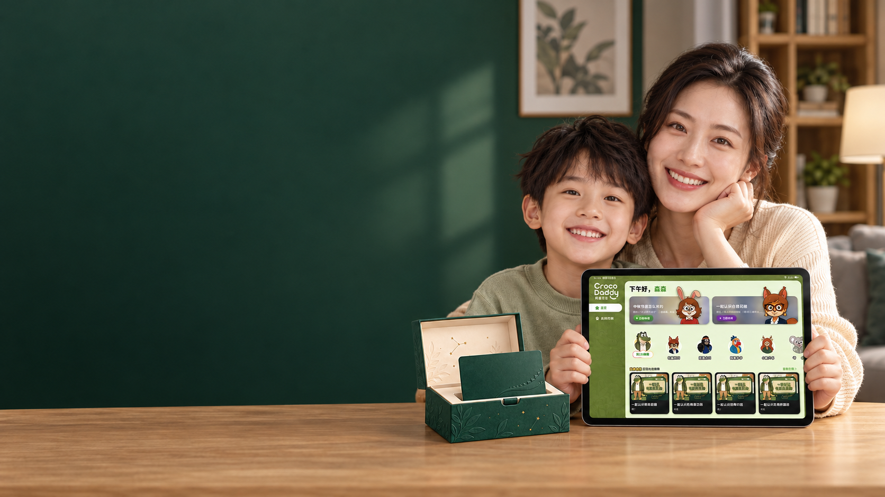
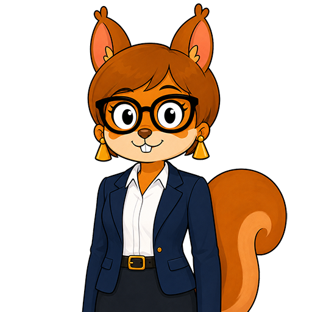
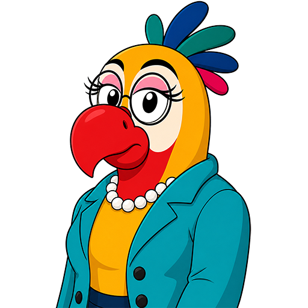
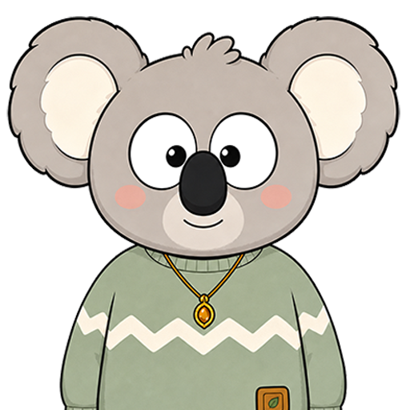
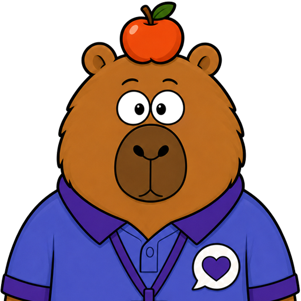
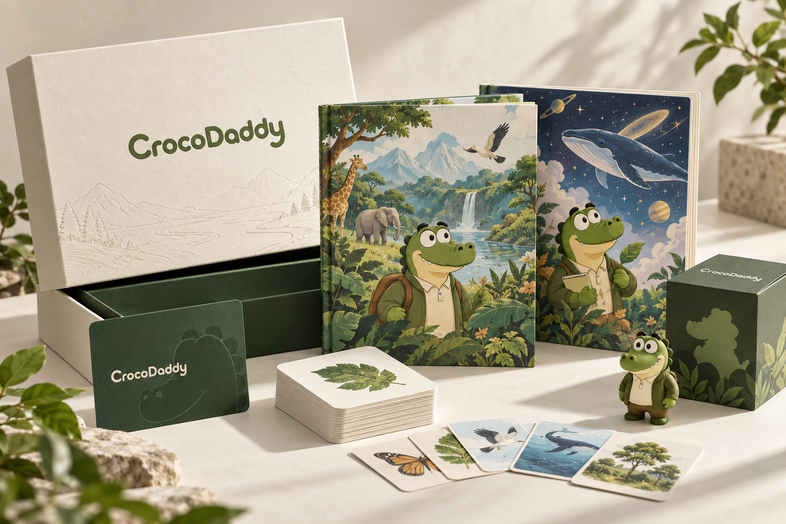
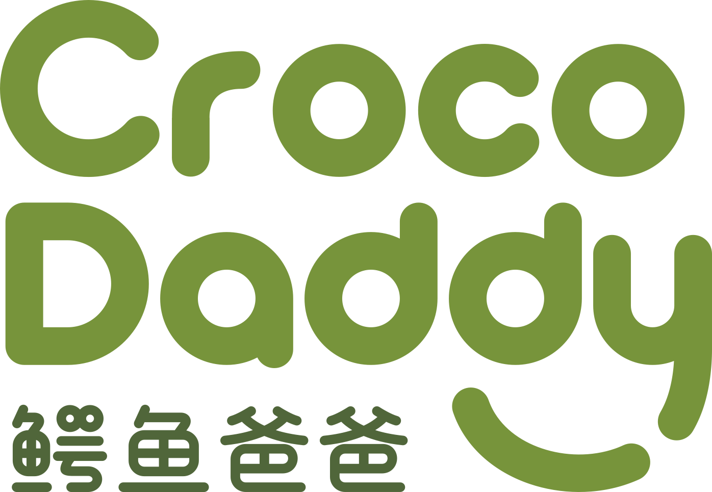

01 就业的残酷真相
今天连名校生都在愁工作，十年后，只会死读书、做标准题的孩子，出校门就会被 AI 淘汰。

在 AI 时代，通识教育比一切分数都重要。
鳄鱼爸爸－家长和孩子最喜欢的AI教育软件
AI 时代，拉开孩子差距的不再是考卷上的分数和一纸学历，而是对世界的认知广度，以及驾驭 AI 的能力。
鳄鱼爸爸为全球孩子打造的 AI 陪伴式教育平台，带孩子看懂世界、用好 AI，在巨变的时代里，练就立于不败之地的核心优势。
只会埋头刷题的孩子， 十年后根本抢不过 AI。
文化课当然要学，但家长必须看清一个现实：今天名校毕业生的工作，AI 几秒钟就能干完。如果孩子每天的时间全被做题填满，对真实世界一无所知，等大学毕业再去补认知、学 AI，就彻底晚了。通识视野和驾驭 AI 的本领，现在就得和文化课一起抓，甚至更紧迫。
02 脱节的学校教育
外面的世界每天都在被 AI 颠覆，但课堂上教的、考的，依然是几十年前的标准答案。
03 被填满的家庭时间
孩子每天的时间都被作业和补习占满，唯独没时间看懂世界——现在不留出时间打底，未来根本没机会翻盘。
✳
当 AI 已经能给出所有“标准答案”，死记硬背就彻底失去了意义。
孩子未来真正的铁饭碗： 看懂世界的广度，和指挥 AI 干活的能力。
02 / 鳄鱼爸爸怎么帮孩子破局？
学校没空教、未来却决定命运的本领， 在这里一站式补齐。
未来的高薪岗位和人生机会，永远留给懂世界、有眼界的人。鳄鱼爸爸把人类核心知识浓缩为 15 大通识领域，不用孩子死记硬背，而是直接对准未来社会最急需的六大底层能力，带孩子把视野彻底打开：
“你想先弄明白哪一件事？”
儿童通识教育 15 大领域全景图
重点培养孩子急需的 6 大核心素养
前沿科技与 AI 常识：搞懂芯片、机器人与 AI 底层逻辑，从小摸透未来世界的运转规则。
财商与经济头脑：从管好零花钱到理解商业逻辑，学会做预算、衡量价值、聪明做选择。
数理与严密逻辑：不靠题海战术，在真实问题中锻炼拆解复杂事物、独立思辨的理科大脑。
审美与艺术创造：看懂名作、建筑与设计之美，培养 AI 永远无法替代的高级品味与创造力。
深度阅读与精准表达：读透好书、看懂历史人文，练就一开口就能讲清观点、打动人心的表达力。
身心韧性与社交合作：学会管理情绪、解决人际冲突，拥有受挫不崩的强大内心与领导力。
覆盖 15 大通识领域，帮孩子搭起完整的世界观
生命与生物
科技、工程与数字世界
语言、阅读与表达
地球与环境
历史与文明
逻辑、思辨与学习方法
宇宙与天文
地理与世界生活
生活实践与生存技能
物质与科学现象
文化、民俗与象征
身体、健康与心理韧性
数学、数量与空间
艺术、审美与创作
社会、经济与公共生活
文化课保住底线，通识课拉开上限。
每天半小时，让孩子在刷题之外，长出真正能应对未来的综合实力。
03 / 孩子怎么学才不痛苦？
像看趣味杂志一样轻松， 自己挖出来的知识才记一辈子。
不用家长催，更不是把网课搬到平板上。鳄鱼爸爸为孩子配备了 24 位各有所长的动物 AI 导师——每位老师都有一张循序渐进的“学习地图”，带孩子边聊边探险。
01 像翻杂志一样轻松闯关
告别枯燥说教。每节通识课都像一本好玩的互动杂志，孩子顺着导师的地图往前走，不知不觉就把硬核知识装进脑子里。
02 互动式追问，越挖越深
真人老师下课就走，但 AI 导师永远在线。孩子随时可以打断、追问，顺着一个好奇点往深处挖——自己探索出来的知识，比死记硬背牢固十倍。
学习方法与提问
鳄鱼爸爸布爸
带孩子把复杂问题拆成小步骤；读完故事、学完新知，还会追问“你是怎么想的？”，帮孩子养成主动思考的习惯。
核心练就：提问力、深度阅读、复盘思维
前沿科技与 AI 实操
仓鼠考特
从机器人、芯片聊到 AI 绘画，带孩子摸透最新科技，学会给 AI 下指令、核对 AI 的回答，亲手做出酷炫作品。
核心练就：科技视野、指挥 AI 做事

财商与决策训练
松鼠利利
拿孩子的零花钱和压岁钱做实战：分清“想要”和“需要”，学会比价、做预算，从小明白钱从哪来、该怎么花。
核心练就：财商思维、权衡利弊、延迟满足
还有 9 位首发导师，随时回应孩子的十万个为什么
| 导师 | 专攻能力 | 导师 | 专攻能力 |
|---|---|---|---|
| 兔子罗布 | 阅读与写作表达 | 狐狸皮斯理 | 数学与逻辑思维 |
 鹦鹉多罗 |
地道英语听说 | 鼹鼠莫非 | 物理与科学启蒙 |
| 浣熊康弟 | 独立生活技能 |  考拉安仔 |
情绪管理与抗挫 |
 水豚蛋蛋 |
社交与团队合作 | 猩猩山冈 | 运动与身体探索 |
| 小鹿小林 | 生命与自然奥秘 | 更多导师 | 持续解锁中... |
| 专职动物导师 | 进阶 Level / 位 | 主题章节 / Level | 互动小节 / 章 |
|---|---|---|---|
| 24 位 | × 7 级 | × 12 章 | × 7 节 |
168 套进阶地图，14,112 节互动内容。 孩子喜欢哪个领域，就能顺着地图一路深挖下去。
04 / 为什么不能直接给孩子用豆包、ChatGPT？
成人 AI 只会喂答案养懒汉， 鳄鱼爸爸教孩子动脑筋、用好 AI。
很多家长问：市面上有免费的豆包、ChatGPT，为什么还要用鳄鱼爸爸？因为成人 AI 是帮大人省事的“偷懒工具”，直接丢给孩子，只会毁掉他的思考能力。
拒绝直接喂答案，苏格拉底式启发：成人 AI 一秒吐出标准答案，孩子用久了连脑子都不转；鳄鱼爸爸绝不直接代劳，而是像导师一样反问、引导，逼着孩子自己想明白。
永久成长记忆，越用越懂你的孩子：普通 AI 聊完就忘；鳄鱼爸爸拥有独家永久记忆系统，记得住孩子的每一个兴趣点、知识盲区和性格变化，因材施教。
儿童级安全围栏，家长 100% 放心：成人大模型信息杂乱、毫无遮拦；鳄鱼爸爸内置严密的儿童专属安全护栏，彻底隔绝不良信息。
保护好奇心、用活 AI 的四大日常场景
01 万问大厅｜把“我不知道”变成好问题
不是被动搜答案，而是引导孩子顺着生活里的小事不断追问，把好奇心变成探索世界的起点。
02 万物卡牌｜把碎片知识连成体系
收集趣味启蒙卡牌、玩领域小游戏，让科学、历史、自然常识跟每天的生活真正连起来。
03 通识地图｜像玩游戏、看杂志一样学通识
把硬核知识变成好玩的闯关地图，像翻趣味杂志一样轻松刷完，还能随时和导师插话互动，不费妈、不用催。
04 创意工坊｜指挥 AI 做出自己的作品
和导师一起构思、画画、写故事，学会怎么把脑子里的想法，变成可展示的真作品。
看看孩子在鳄鱼爸爸里，是怎么“指挥 AI”的：
孩子说“想画火星城市”？ 导师先带他把这座城想清楚。
普通 AI 会直接扔给孩子一张图，3 秒钟结束战斗；但在鳄鱼爸爸里，导师会先追问：谁住在那里？他们怎么喝水？房子为什么长怎样？ 孩子必须自己做决定、补细节，最后再指挥 AI 生成画面。
孩子收获的绝不止一张图，而是构思、提问,表达和反复打磨作品的真本事。
孩子：“我想画一座火星城市！”
导师：“太酷了!但火星没有空气和水，那里的居民住在哪儿？你想先解决氧气还是饮水问题？”
一起完成：孩子一步步补充设定、修改方案，最后指挥 AI 生成独一无二的火星城。
产品截图位：苏格拉底式 AIGC 绘画完整对话与最终作品
产品截图位 01｜万问大厅：看导师如何一步步引导孩子，把一句随口好奇变成深度探索
产品截图位 02｜通识地图与卡牌：看孩子如何像玩游戏、翻杂志一样轻松闯关学通识
产品截图位 03｜家长成长雷达：永久记忆记录下的孩子兴趣图谱、能力进展与下一步建议
05 / 真实口碑
没那么费妈了， 但孩子每天开始追着你讲怪问题了。
用过的人都说，这软件最大的变化不是考了多少分，而是孩子看世界的眼界被彻底打开了：
06 / 把这一整套送给孩子
打开一个礼盒， 开启一整年的探索。
孩子有课、有导师、有可以动手玩的内容；家长有方法、有陪跑，也能跟上孩子的变化。

孩子端 · 家长端 · 实体礼物
一套装好
年卡随赠 · 家长端 3 个月
孩子有人陪着学，家长也有人陪着做。
独家家长端 AI 陪跑 Agent：给每个孤独、无助、emo 的家长配一个专家智囊团
没有人天生就会做家长。面对孩子的作业、情绪、沟通与成长规划，你不再是孤军奋战：
- 全球首创的家长端专业 Agent：背后不是冰冷的数据库，而是由上百位家庭教育专家、心理学家与学习规划师的专业经验深度蒸馏而成的智能化系统。
- 比任何真人专家更懂你的孩子：它不仅精通专业教育方法，更因为实时沉淀了孩子在鳄鱼爸爸里聊出来的海量数据与成长记忆，比你在外面花几百块请的真人咨询、或者随便问两句豆包，更能给出最对症、最落地、最适合你家娃的个性化支招与行动规划。
- 24 门专为家长准备的系统成长课：125 章落地框架、9 条年级路线，让家长在陪伴孩子的同时，自己也能不断升级认知，告别焦虑与崩溃。
主推 · VIP 年卡礼盒
给孩子一年，看看他会走多远。
一年儿童端 VIP 通识教育权益，连同家长陪跑与开箱就能用的探索工具。
礼盒方案价
¥1,399
/ 年
| 礼盒里的 7 份内容 | 方案单独购入价值 |
|---|---|
| 01 儿童端 VIP 年卡 | ¥1,399 |
| 02 家长端家庭教育陪跑季卡 | ¥999 |
| 03 孩子成长路线图软件 | ¥999 |
| 04《15 大领域探险画册》 | ¥199 |
| 05《家庭 AI 提问手册》 | ¥199 |
| 06 万物启蒙卡牌一套 | ¥99 |
| 07 动物导师盲盒一个 | ¥99 |
整套方案价值¥3,993
孩子的下一个“为什么”，可能就在今天。
从一张卡开始， 陪他把问题问得更远。
带走 VIP 年卡礼盒 ↗ABOUT CROCODADDY

MONO LABS
魔能创新教育实验室
07 / 关于我们
为变化的世界， 做一所孩子愿意走进的“新课堂”。
Mono Labs 魔能创新教育实验室成立于 2025 年。团队由教育专家、IT 专家，以及来自大型科技企业的产品与技术人员组成。我们把 AI 的新能力带进儿童学习，让每个孩子都能在学科知识之外，接触更广阔的世界，练习与 AI 协作。
我们的目标，是让这种每天都能发生的探索，成为各国现有教育的有效补充。孩子未来面对的职业环境会继续变化，学会学习、判断与适应，会陪伴他们更久。
为什么是鳄鱼爸爸？
鳄鱼一脉的祖先曾与恐龙生活在同一个时代，历经上亿年的环境变化，延续至今。我们希望孩子也能带着好奇心观察世界，在变化面前不断学习、调整，拥有让自己活得好的本领。